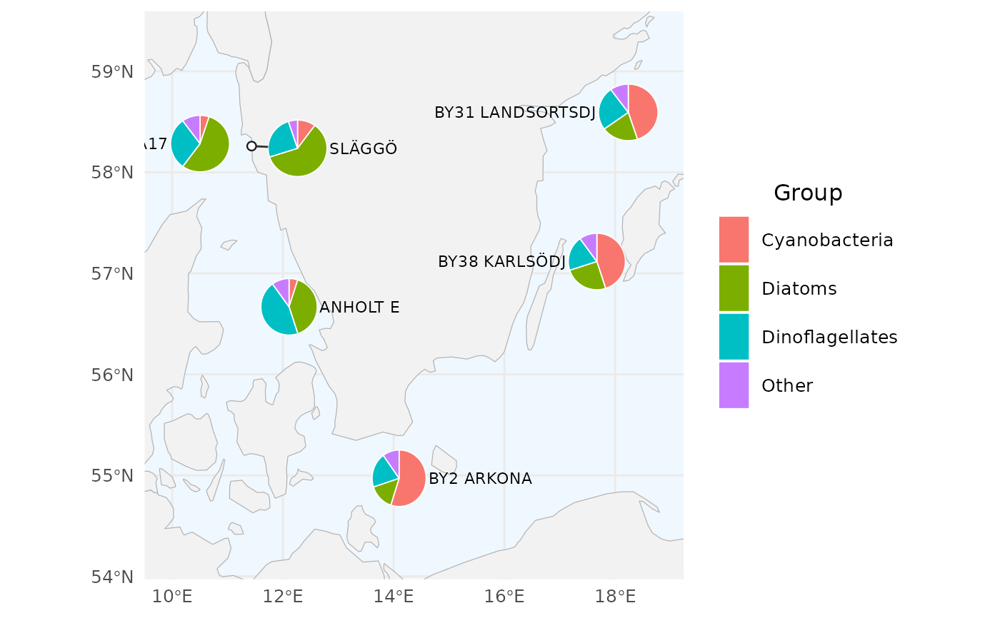
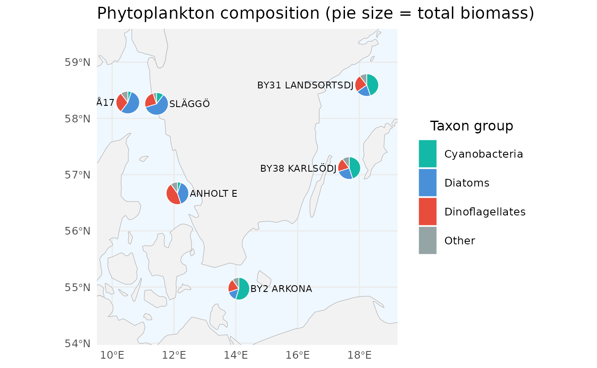
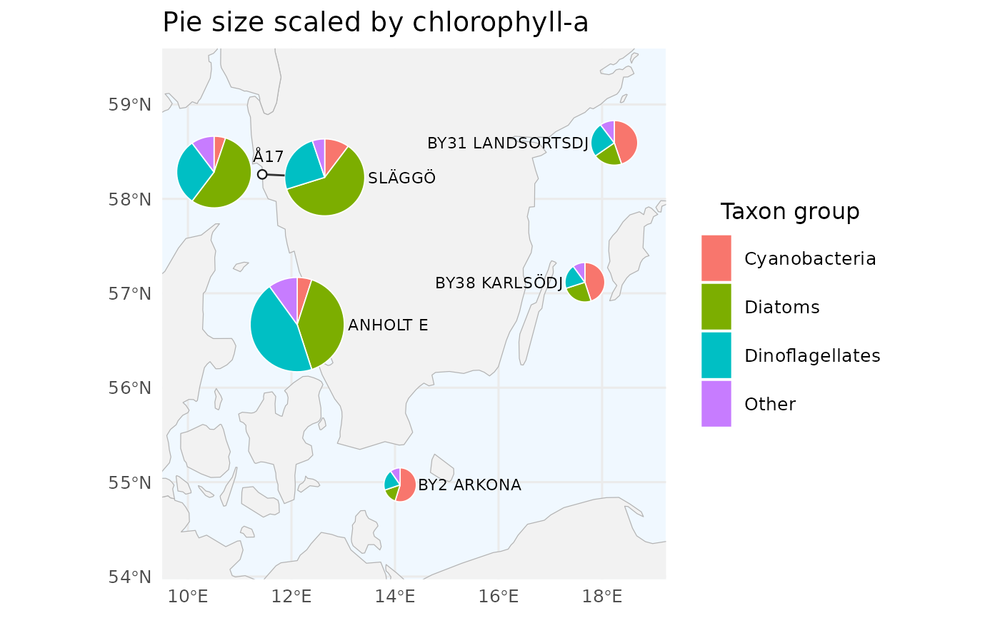

Draws a pie chart at each station on a map. When pies would overlap in crowded regions, the pies are displaced asymmetrically away from their true station coordinates and a leader line + anchor dot is drawn so the viewer can still tell which pie belongs to which station. Works with any grouping (phytoplankton groups, zooplankton orders, microbial phyla, ...) and any numeric value (biomass, biovolume, abundance, ...).
Usage
create_pie_map(
data,
station_col = "station_name",
lon_col = "sample_longitude_dd",
lat_col = "sample_latitude_dd",
group_col = "group",
value_col = "value",
label_col = station_col,
group_levels = NULL,
group_colors = NULL,
group_labels = NULL,
radius = 0.28,
size_by = NULL,
size_range = c(0.15, 0.4),
repel = TRUE,
min_sep = 2.4,
min_disp = 1.6,
show_labels = TRUE,
label_size = 3,
pie_border_color = "white",
pie_border_width = 0.3,
leader_color = "gray20",
leader_width = 0.5,
anchor_color = "gray10",
anchor_fill = "white",
anchor_size = 1.8,
basemap = NULL,
basemap_scale = "medium",
basemap_fill = "gray95",
basemap_border = "gray70",
sea_color = "aliceblue",
xlim = NULL,
ylim = NULL,
pad = 1,
title = NULL,
legend_title = "Group"
)Arguments
- data
A long-format data.frame with one row per (station, group). Required columns are configurable through the
*_colarguments and default tostation,lon,lat,group,value.- station_col, lon_col, lat_col, group_col, value_col
Column names in
data. Defaults match SHARK conventions:"station_name","sample_longitude_dd","sample_latitude_dd","group","value".- label_col
Column to use for the on-map station label. Defaults to
station_col. Set toNULL(andshow_labels = FALSE) to omit labels entirely.- group_levels
Optional character vector controlling the legend and slice ordering. Groups not present in
dataare dropped.- group_colors
Optional named character vector of colours, keyed by group name. If
NULL, ggplot's default discrete palette is used.- group_labels
Optional named character vector of legend labels, keyed by group name. Labels may include HTML markup (requires the
ggtextpackage to render).- radius
Pie radius in latitude degrees. Default
0.28.- size_by
Optional.
NULL(default) draws all pies atradius."total"scales each pie's radius by the square root of the station's total value. Any other character value is interpreted as the name of a numeric per-station column indata(e.g. chlorophyll, secchi depth); values are averaged per station when duplicated across rows.- size_range
Numeric length-2: minimum and maximum radius (in latitude degrees) when
size_byis set. Defaultc(0.15, 0.40).- repel
Logical. Run the displacement algorithm? Default
TRUE.- min_sep
Minimum centre-to-centre separation between two pies, expressed as a multiple of the larger of the two radii. Default
2.40.- min_disp
Minimum displacement for a pie that has been moved at all, as a multiple of its radius. Default
1.60.- show_labels
Logical. Draw station labels next to each pie?
- label_size
ggplot text size for the station labels.
- pie_border_color, pie_border_width
Aesthetics for the slice borders.
- leader_color, leader_width
Aesthetics for the leader segments drawn from anchor to displaced pie edge.
- anchor_color, anchor_fill, anchor_size
Aesthetics for the dot drawn at the true station location of each displaced pie.
- basemap
Optional ggplot layer (or list of layers) used as the base map. If
NULL, a coastline polygon fromrnaturalearthis drawn (requires thernaturalearthpackage).- basemap_scale
Resolution passed to
rnaturalearth::ne_countries()whenbasemapisNULL. One of"small","medium"or"large".- basemap_fill, basemap_border, sea_color
Colours for the default coastline basemap.
- xlim, ylim
Optional numeric length-2 vectors. If supplied they override the auto-fitted map extent.
- pad
Padding (in degrees) added around station bounds when auto-fitting the extent.
- title, legend_title
Optional plot title and legend title.
Examples
# Six SHARK monitoring stations spanning the Swedish west coast,
# Kattegat, and Baltic Proper. Note that SLÄGGÖ and Å17 sit close
# enough on the Skagerrak shelf that their pies will be repelled and
# drawn with leader lines.
stations <- dplyr::tibble(
station_name = rep(c("SLÄGGÖ", "Å17", "ANHOLT E", "BY2 ARKONA",
"BY31 LANDSORTSDJ", "BY38 KARLSÖDJ"), each = 4),
sample_latitude_dd = rep(c(58.25984, 58.28434, 56.66866, 54.97116,
58.59366, 57.11717), each = 4),
sample_longitude_dd = rep(c(11.43567, 10.50432, 12.11117, 14.09883,
18.23633, 17.66867), each = 4),
group = rep(c("Diatoms", "Dinoflagellates",
"Cyanobacteria", "Other"), 6),
value = c( 60, 25, 10, 5, # SLÄGGÖ
55, 30, 5, 10, # Å17
40, 45, 5, 10, # ANHOLT E
15, 20, 55, 10, # BY2 ARKONA
20, 25, 45, 10, # BY31 LANDSORTSDJ
25, 20, 45, 10) # BY38 KARLSÖDJ
)
# The default basemap uses `rnaturalearth` + `rnaturalearthdata` (both
# Suggests); each example below is guarded by a single-line check so the
# plots render inline rather than all at once after a large `if` block.
has_basemap <- requireNamespace("rnaturalearth", quietly = TRUE) &&
requireNamespace("rnaturalearthdata", quietly = TRUE)
# \donttest{
# 1. Uniform pie size, default palette, automatic map extent.
if (has_basemap) create_pie_map(stations)

# 2. Scale pie radius by the station's total value (`size_by = "total"`):
# stations with larger summed biomass get bigger pies. `size_range`
# controls the smallest/largest radius (in latitude degrees). Pie
# sizes are relative within the plot only; no size legend is drawn.
if (has_basemap) create_pie_map(
stations,
size_by = "total",
size_range = c(0.20, 0.55),
group_colors = c(Diatoms = "#4A90D9",
Dinoflagellates = "#E74C3C",
Cyanobacteria = "#14B8A6",
Other = "#95A5A6"),
legend_title = "Taxon group",
title = "Phytoplankton composition (pie size = total biomass)"
)

# 3. Scale pie radius by an external per-station metric. Here we add a
# fake chlorophyll-a column and pass its name to `size_by` - any
# numeric per-station column in `data` works (e.g. secchi depth,
# cell counts, nutrient concentrations).
stations$chla <- rep(c(3.1, 2.8, 4.2, 1.1, 1.5, 1.3), each = 4)
if (has_basemap) create_pie_map(
stations,
size_by = "chla",
size_range = c(0.18, 0.50),
legend_title = "Taxon group",
title = "Pie size scaled by chlorophyll-a"
)

# }